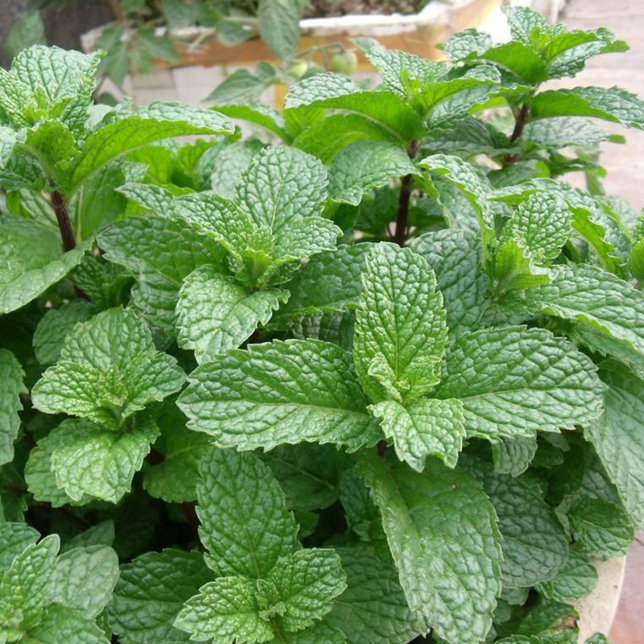
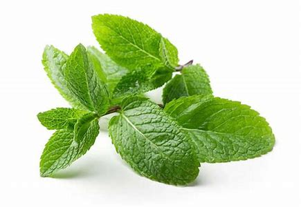
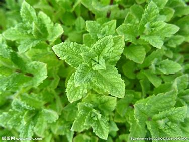

薄荷



名称
Wild Mint,Herb of Wild Mint,Peppermint
蕃荷菜、菝蕑、吴菝蕑、南薄荷、猫儿薄荷、野薄荷、升阳菜薄苛、蔢荷、夜息药、仁丹草、见肿消、水益母、土薄荷、鱼香草、香薷草
薄荷的种植和炮制
来源
本品为唇形科薄荷属植物薄荷 Mentha haplocalyx Briq.的干燥地上部分。夏、秋二季茎叶茂盛或花开至三轮时，选晴天，分次采割，晒干或阴干。
性味
辛，凉。
炮制
拣净杂质，除去残根，先将叶抖下另放，然后将茎喷洒清水，润透后切段，晒干，再与叶和匀。
性状
干燥全草，茎方柱形，长15～35厘米，直径2～4毫米，黄褐色带紫，或绿色，有节，节间长3～7厘米，上部有对生分枝，表面被白色绒毛，角棱处较密，质 脆，易折断，断面类白色，中空。叶对生，叶片卷曲面皱缩，多破碎。上面深绿色，下面浅绿色。具有白色绒毛；质脆。枝顶常有轮伞花序，黄棕色，花冠多数存 在。气香，味辛凉。以身干、无根、叶多、色绿、气味浓者为佳。
薄荷的效果
功效
本品为唇形科薄荷属植物薄荷的干燥地上部分。 用于风热感冒，风温初起，头痛，目赤，喉痹，口疮，风疹，麻疹，胸胁胀闷。
经脉
归肺经、肝经。
主治
宣散风热。清头目，透疹。用于风热感冒，风温初起，头痛，目赤，喉痹，口疮，风疹，麻疹，胸胁胀闷。
用法用量
内服：煎汤，3~6g，不可久煎，宜作后下；或入丸、散。
外用：适量，煎水先或捣汁涂敷。
注意禁忌
阴虚血燥，肝阳偏亢，表虚汗多者忌服。
- 1.《药性论》：新病瘥人勿食，令人虚汗不止。
- 2.《千金·食治》：动消渴病。
- 3.《本经逢原》：多服久服，令人虚冷；阴虚发热，咳嗽自汗者勿施。
- 4.《本草从新》：辛香伐气，多服损肺伤心，虚者远之。